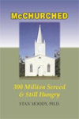

Please email us
(click here)catcher@JewsOnFirst.org
And encourage your friends to visit us at
JewsOnFirst.org
Jews on First
P.O. Box 33821
Washington DC 20033
310-553-1146 |
|
|
Please Support JewsOnFirst
Support JewsOnFirst by purchasing greeting cards by David Honig spoofing the religious right's claim of a "War on Christmas." Click here to see.
Take Action for the recall of a religiously intolerant video game
Please join with JewsOnFirst and CrossWalk America in a petition campaign for the recall of Left Behind: Eternal Forces.
Based on the "end times" novels by the same name, Left Behind is a video game that arms young people to kill all who resist conversion to fundamentalist Christianity. The progressive Christian organization CrossWalk America is leading a peitition campaign requesting the recall of the game because it teaches intolerance. JewsOnFirst has adapted CrossWalk America's petition for non-Christian signers. Please click here to add your e-signature. Thank you!
ANALYSIS BY JEWSonFIRST.ORG
Republican electoral defeat leaves religious right largely intact
By JewsOnFirst.org, November 20, 2006
The Republican defeat was hardly an unmitigated disaster for the religious right. Christian nationalists will continue to pose an extreme danger to the First Amendment's guarantees regarding religion.
Right-wing Christians control many of the state Republican parties and dominate state Republican legislative majorities. Given the loss of opportunity on the federal level, there will probably be more, not fewer, state legislative attacks on science, gay rights and reproductive rights. Additionally, there will probably be an increase in state legislation deliberately breaching the separation of church and state in school and public life. Continue.
RECENT NEWS
Kline loses election! Click here.
Complaint to IRS on churches named in Kansas Attorney General's memo as campaign operations.
October 27, 2006. The watchdog group Citizens for Responsibility and Ethics in Washington has filed a complaint with the Internal Revenue Service alleging that two churches named in Kansas Attorney General Phill Kline's strategy memo (posted here last month) are engaging in partisan political activity in violation of their tax exempt status.
We have added links to reports and documents about the complaint to our report on Kline's memo. Please click here and scroll down to the end of the report, where new items are identified with the update symbol.
Kansas Attorney General writes orders for a reelection campaign operation "in each church"
Memo shows Republican Phill Kline's detailed plan for a church-based political machine
by JewsOnFirst.org, September 17, 2006
In a tough battle for reelection, Kansas Attorney General Phill Kline gave his campaign staff detailed instructions on how to use churches to raise funds, recruit campaign volunteers and collect voter contact information. He wrote the instructions in a memo obtained by news organizations and JewsOnFirst.org.
Kline writes that the "goal" of receptions, which his staff will organize to dovetail with church services, "is to walk away with contact information, money and volunteers and a committee in each church." He names three of the churches already involved in his campaign.
Kline's August 8th memo lays bare for the world (including Democratic Party leaders who might care to protest) the details of how at least one Republican on the religious right uses churches for electoral operations. There is no reason to assume that Kline just created this campaign model. Continue.
* * * * *
Jewish family flees aggressive Christianity, anti-semitism in Delaware school district.
(August 23rd, 2006. Please note that we posted an update on this situation here. On August 11th, we posted two new reports, which you can find here.)
June 28, 2006. A southern Delaware school district promoted Christianity so aggressively that a Jewish family felt compelled to move to Wilmington, two hours away, because they feared retaliation for filing a lawsuit. Their suit recounts the hardships of being Jewish in the Indian River School District with its prayers and preaching teachers.
It tells how the high school graduation of their daughter -- the only Jewish student in her class -- was ruined by a pastor who singled out "one specific student" and asked in Jesus' name that the "Father" guide her. When the family sought to moderate the district's religious policy, the community turned on them. A crowd of adults at a school board meeting yelled at their son to take off his yarmulke and his classmates called him "Christ killer." Please click here.
|
|
Election 2006
JewsOnFirst's election round-up is here. Our post-election analysis is here.
Public education
Jewish family flees aggressive Christianity, anti-semitism in Delaware school district. The Indian River School District in southeastern Delaware promoted Christianity so aggressively that a Jewish family felt compelled to move to Wilmington, two hours away, because they feared retaliation for filing a lawsuit. Their suit, filed with a second, anonymous family, recounts the hardships of being Jewish in the Indian River School District with its prayers, preaching teachers and crowds yelling "Christ killer." Go.
Religious harassment of Muslim family by southeast Delaware Cape Henlopen School District. Religious harassment in a southeast Delaware school district traumatized two young Muslim girls and prompted the U.S. Department of Justice to intervene and the family to sue. Go
Evangelizing "Good News" clubs proliferating in public elementary schools; club promoters say "classrooms are full of unchurched children waiting to hear about a Savior who loves them and forgives sin." Go
Attorney recounts winning Jesus portrait case. In a recorded conversation with JewsOnFirst, attorney Hal Sklar discusses his successful effirt to persuade a West Virginia school district to remove a portrait of Jesus from the hallway near a high school principal's office. Go
Controversies over high school Bible courses, that teach the Bible as literature, with the Christian right maneuvering to institute the courses while avoiding adopting a text book deemed acceptable by Jewish and moderate organizations. Go
Christian club run by parents bullies school. The religious right Liberty Legal Institute is suing to force the Dallas-area school district to treat the club like a student organization. Go
Christian academy sues University of California over admissions standards, alleges UC's refusal to credit courses teaching creationism is "viewpoint" discrimination. Go
Aggressive Slavic Christian immigrants are terrorizing gays and lesbians in Sacramento. These militants, organized through their churches, have been in the forefront of religious right opposition to legislation promoting respect of gays and lesbians in California's public schools. Go
Faith-based funding
GAO report finds hit or miss monitoring of faith-based funding recipients. A new report on the Bush administration's faith-based initiatives raises concerns over the adequacy of federal and state monitoring. Go
Faith-based funding subsidizes politically partisan religious groups, including Pat Robertson's "Operation Blessing" anti-gay groups. And President Bush is promising more faith-based funding, even as he cuts social services. Go
Jewish leaders speak out against faith-based funding, especially when it permits religious discrimination in hiring. Go
Intelligent design
Kansas mandates teaching intelligent design, embarassing some Kansans. Go
Some states continue to consider teaching intelligent design, or lessons "questioning" evolution, even after a judge overturned the Dover, Pennsylvania school district's religiously based science curriculum. Go
Noah's Park, our quick tour of the theme parks of the religious right, where visitors learn how dinosaurs were on Noah's ark and how the earth is "young" and fossils form quickly. Go
Intimidation of judges
Supreme Court Justices warn of Republican threat. Retired Justice Sandra Day O'Connor and Justice Ruth Bader Ginsburg warn that Republicans tone and court-stripping proposals threaten the judiciary's independence. Former House Leader Tom Delay says they just don't get it. Go
Anti-semitism in attack by Focus on the Family on US Judge Stephen Reinhardt. Go
Patriarchy
Kansas requires reporting of teen sex if the teens are under 16. A reproductive rights group is suing to overturn the requirement. Go
Intervention abroad
Christocrat named to aid agency. President Bush has nominated the dean of academic affairs at Patrick Henry College, Paul Bonicelli, to be the Deputy Assistant Administrator of the United States Agency for International Development. Patrick Henry College trains home-schooled Christian fundamentalists for leadership careers, especially in government. Go
Dominionism
Dominionism is... Broadly, we consider dominionism to be a plan for fundamentalist Christian government. But our range of readings on the subject enable you to consider the particulars. Go
Pastor Rod Parsley, runs a megachurch in Ohio, where he is credited with turning out the right-wing evangelical vote for President Bush in 2004. The IRS is investigating his operations in response to complaints that he has used tax-exempt organizations for partisan political purposes. Go
Ohio clergy challenge Christocrats Parsley and Johnson. Under the banner "We Believe Ohio," mainstream clergy in Columbus are organizing their communities to reclaim the public space the two religious right leaders have occupied. Our coverage includes interviews and documents. Go
Missouri legislature considers resolutions endorsing Christianity. One measure recognizes a Christian God; the other calls for lessons on "Judeo Christian heritage." Go
JewOnFirst Hosts Conversation
Dealing with Christian Zionists and their "Nights to Honor Israel." Rabbi Haim Dov Beliak, JewsOnFirst co-director, moderated a wide-ranging discussion about how rabbis are dealing with "Nights to Honor Israel," a project of Christians United for Israel (CUFI). We have posted a recording of the hour-long, August 18, 2006 conversation. Go
JewsOnFirst in the news
The Jewish Journal of Los Angeles interviews Co-director Rabbi Haim Dov Beliak. Go
Washington Jewish Week interviews co-directors Jane Hunter and Rabbi Haim Dov Beliak. Go
Kansas City Jewish Chronicle quotes JewsOnFirst's report on the Kansas Attorney General's leaked memo outlining plans to use churches for his reelection campaign operations. Go
Cleveland Jewish News interviews co-director Rabbi Haim Dov Beliak. Go
The Forward interviews co-directors Jane Hunter and Rabbi Haim Dov Beliak. Go
Cultural issues
Christian conservatives say "Veggie Tales" got raw deal and one called NBC "anti-Christian" when the network edited religious references from children's cartoon series. Go
"War" over Christmas enters second season with Wal-Mart abandoning inclusiveness, specifically the term "holidays," for "Christmas," as called for by the religious right. Go.
Marine Reserves Toys for Tots broker distribution of talking Jesus dolls, after initially hesitating for fear of the dolls ending up with Muslim and Jewish children. The Marine program arranged for Christian organizations to distribute the donated dolls to Christian children. Go
Evangelizing the Jews
Messianic Jewish missionary groups raise money from Christians to evangelize Jews. Go
|
|
|
IN THIS WEEK'S EMAIL UPDATE
Conversation with Rabbi Sharon Kleinbaum about Jerusalem WorldPride and the violent ultra-Orthodox campaigns against it in Israel and New York. Kleinbaum, who leads Congregation Beth Simchat Torah, the world's largest GLBT synagogue, was arrested in New York last month while peacefully counter-protesting a hateful demonstration by Satmar Hasidim. Please click here for links to the recorded conversation and news reports.
"Left Behind" video game arms young people to kill all who resist conversion to fundamentalist Christianity. We report on the quiet roll-out of a pernicious video game based on the Left Behind novels, in which UN peacekeepers are the "bad guys." Jewish organizations have yet to react to the game, but progressive Christian organizations are campaigning for its recall. Click here.
Prager outrages with fight against Congressman's oath on Koran. Right-wing Jewish radio talker Dennis Prager took a page from the Christian Right when he slammed incoming Congressman Keith Ellis's plan to use a Koran at his swearing in. (Photo courtesy of Los Angeles Jewish Journal.) Click here
Also this week:
- As Judaism's Conservative Movement considers liberalizing its policies on gays and lesbians, we are posting news reports and commentary by Conservative Movment rabbis. Click here.
- The Supreme Court has agreed to decide whether a private organization has the right to challenge the constitutionality of the Bush administration's faith-based funding of social services.Click here.
From last week's email:
Teacher proselytizes class in suburban New Jersey. A public high school teacher lectures his history class that they will go to hell if they don't accept Jesus. A student gives a recording of the lectures to school administrators -- who defend the teacher. The community turns against the student. This is not happening in Missouri or Oklahoma, but in Hudson County, New Jersey, a quick commute from Manhattan. We talk with the student and his father. Please click here.
A return visit to Christian Zionist leader John Hagee's church. Rev. Art Preisinger, a Lutheran pastor who reported on Pastor Hagee's "Night to Honor Israel" last month, reports on a second visit to Hagee's Cornerstone Church. "If John Hagee downplays, yea ignores, Christianity when he is with his [Christian Zionist and Jewish] friends," writes Preisinger, "he reverts to 'end time' type among his local followers on Sunday morning and evening." Click here.
The "war" over Christmas, continued... The religious right's annual "war" over merchant nomenclature (Happy Holidays vs. Merry Christmas) is peaking and we've found some particularly offensive forays -- a card encouraging merchants to ignore non-Christians and a religious right legal group's trademarking of its battle slogans. (The illustration, a greeting card by David Honig spoofing the religious right's claim of a war on Christmas, is available for sale -- with the profits donated to JewsOnFirst.) Please click here.
Supreme Court won't hear school voucher case. The court declined to consider a right-wing legal group's challenge to Maine's law barring the use of state funds for religious school tuition. We will be expanding our coverage as additional reports and commentaries are available. Please click here.
If you sign up for JewsOnFirst's weekly email updates, you won't miss important reports like these. Please click here
|
Why we're JewsOnFirst.org, the Jewish response to attacks on the First Amendment by the Christian right
The First Amendment to the Constitution begins: Congress shall make no law respecting an establishment of religion, or prohibiting the free exercise thereof…
We Jews have relied on those few words as the enduring bulwark of our freedom, security and privacy here in the United States. But in recent years, we've witnessed numerous efforts by fundamentalist Christians to erode the First Amendment by imposing their religious values through legislation, executive power, and intimidation.
|
Church-state separation
Indiana legislators want Jesus prayers during official business. House speaker disparages Jewish minority. Go
House Republicans pass bill denying fees and damages for church-state cases when plaintiffs successfully sue a government. Passage was presented as striking a blow against a "profiteering" ACLU. Go
Jewish Women Lobby the Missouri Legislature. Jewish activists from St. Louis traveled to Jefferson City to express concern to legislators about a number of measures that threaten religion-state separation. We interview one of the lobbyists. Go
Texas clergy organize to protect religious space. Over 100 Texas clergy launched a Respect Our Faith campaign last week to push back against the partisan use of houses of worship by religious right groups. We talk with Rabbi Neal Katz, a campaign leader. Go
Mt. Soledad cross still on public land in San Diego after years of litigation, becomes an important religious right cause. Go
How Jews see church-state separation
The Baptizing of America, a new book by Rabbi James Rudin, who writes of the Christocrats' goal of permanent, theocratic rule through the Republican Party. We review it. Go
Kentucky Jewish Community protests the state legislature's "preoccupation" with religion. Go
Jewish leaders in Joplin, Missouri are concerned about a bill endorsing a "Christian God." We interview two of them. Go
Religious coercion at the U.S. Airforce Academy
Secretly issued Air Force chaplain guidelines obtained by foundation led by academy grad Mikey Weinstein. The Air Force issued these regs after Congress rescinded a set of controversial guidelines. Go
Congress nullifies military chaplain restraints after religious right legislators fail to insert language permitting chaplains to pray to Jesus at mandatory assemblies. (September 2006) Go
Air Force imposes guidelines allowing chaplains sectarian prayers. A sustained pressure campaign by rightwing Christian evangelicals and their supporters in Congress succeeded in early 2006 in reversing tepid Air Force attempts to rein in religious proselytizing at the Academy. Go
Jewish organizations divided over Air Force guidelines for chaplains. Go
Former Air Force Academy cadet and Reagan administration lawyer sues Air Force to reverse religious intimidation by right-wing evangelical Christians. We interview Mikey Weinstein, who says Christocrats have already established themselves throughout the military -- not just the Air Force. Go
US Foreign Policy: Christian Zionists
What do Christian Zionists do on Sunday morning? A curious reporter slipped into a pew at the Cornerstone Church in San Antonio and listened to Pastor John Hagee, leader of Christians United for Israel, preach a rousing, if historically inaccurate, sermon about "Islamo-facism" and Nazism and Hitler, along with warnings of an Iranian nuclear attack on Israel. Go
Christian Zionist leader Hagee depicts Jews as Christ killers. John Hagee, the megachurch pastor who is the current face of Christian Zionism in the United States, depicted Jews as Christ killers in a radio interview. Go
Rabbis debate cooperation with CUFI. Debate flourishes on rabbis' listserv on whether to participate in events with Pastor John Hagee's Christians United for Israel. Go
What are the Rabbis seeing and saying?
Rabbi Ariel Stone of Congregation Shir Tikvah, Portland, Oregon, in a conversation with JewsOnFirst, said: "Jewish tradition teaches that alienation is exile from each other, and when we are exiled from each other, the presence of God is exiled from us. When I'm involved in issues like the end of life or gay marriage, I've really felt that this is where God is. This is bringing God closer." Go
Rabbi Elliot Dorff, rector and philosophy professor at the University of Judaism in Los Angeles talks with JewsOnFirst about Conservative Judaism's deliberations on gay marriage and ordination. Click here.
Go
Rabbi Joel Rembaum, a prominent Conservative Movement rabbi says he will celebrate same-sex relationships. Read his letter to his congregation, Temple Beth Am in Los Angeles and a news report. Go
Rabbi Arthur Waskow, director of the Shalom Center in Philadelphia, writes on The Emerging Torah of Same-Sex Marriage. Go
Rabbi Neal Katz of of Congregation Beth El in Tyler, Texas, in introducing a report the Texas Freedom Network detailing serious problems with public school Bible classes, said: "I believe it is tragic to put any child in a position where their faith is contradicted and belittled by their own school." Go
Rabbi Jeff Kurtz-Lendner of Northshore Jewish Congregation in Louisiana explains why Louisiana's politicians enacted a bill denying abortions to victims of rape and incest. Go
A sermon by Rabbi Leslie Bergson, a chaplain at Claremont Colleges in Claremont, California, who views as problematic "leaders who have tied their fortunes to the Republican Party, and who have no compunction about announcing loudly who God has anointed for political office." Go.
Rabbi Stuart Federow, spiritual leader of Shaar Hashalom in Houston, questions the ultimate worth of alliances with right-wing Christians, even though they support Israel and memorialize the Holocaust. Go
Rabbi Haim Dov Beliak of JewsOnFirst prepared this commentary for the Days of Awe.He reflects on contemporary themes of American life in the spirit of the Jewish New Year, 5767, contrasting the Jewish understanding of bringing God's kingdom into being with the vision of the Christian right, which wields increasing political power. Go
Rabbi Haim Dov Beliak of JewsOnFirst, authored a commentary, The Marriage Metaphor of Shavuot, as part of a printout for Shavuot weekend services in advance of the Senate's vote on the federal marriage amendment. Go
|
Gay and lesbian rights
Suing for the "religious right" to hate. A right-wing Christian legal group is suing to overturn Georgia Tech's policies protecting gays and lesbians against harassment and discrimination. Similar lawsuits are sprouting around the country. Go
Interview with a 21st Century freedom rider, Diane Gray, a participant on the cross-country Soulforce Equality Ride. The ride, aimed at changing America's heart on homosexuality, stopped at Christian colleges which exclude LGBT individuals. Go
Rev. Ted Haggard outed by male sex partner, forced to resign. The religious right's own gay hatred destroys the career of the leader of National Association of Evangelicals and Colorado Springs megachurch pastor. Go
Mark Foley congressional page scandal. Reform Movement leader calls on Tony Perkins of Family Research Council to apologize for perpetuating "despicable stereotype" that gay men are prone to be child molesters." Go
Religious right held "Liberty Sunday" pre-election gay-bashing. The Boston event featured Gov. Mitt Romney and was sponsored by the Family Research Council. Go
Clergy for Fairness opposes federal marriage amendment. Clergy representing many faith communities (including Judaism)lobbied Congress and led a nationwide campaign against the constitutional amendment that would limit marriage nationwide to one man and one woman. Go
Conservative Judaism postpones vote on gay marriage, ordination. We interview Rabbi Elliot Dorff, rector and philosophy professor at the University of Judaism in Los Angeles, who participated in deliberations on the policy. Go
Religious right groups resume boycott of Ford to punish the car maker for advertising in gay publications and sponsoring LGBT events. Christocrats also pressed a shareholder resolution to remove homosexuals from the corporation's equal opportunity statements. Go
Gay groups challenge "ex-gay" ministries saying the Christian right's homophobic "prevention" programs can harm young people and should be regulated. Go
Maryland leaders and activists protest Focus on the Family "conversion therapy" conference in Washington DC suburb. Go
Marriage amendments sprout in election season as religious right readies tested get-out-the-vote device. Go
Reproductive rights
Bush picks director of anti-contraceptive, fake-clinic group to head family planning programs, installs Dr. Eric Keroack as deputy assistant secretary for population affairs in the Department of Health and Human Services amid wide protests. Go
South Dakota's harsh law criminalizing abortion, makes no exception for rape or incest. Voters defeat it. Go
Louisiana's no-exceptions abortion law. We ask the governor why she will sign it; we get a better answer from Rabbi Jeff Kurtz-Lendner. Go
Ohio considers abortion law without exception for mother's life. Our report includes testimony from both sides. Go
Religious right moves to ban abortion drug. The religious right has seized on the deaths of several women who used the abortion drug RU-486 to ramp up a campaign to ban the widely used drug. Go
Rabbi Arthur Waskow director of the Shalom Center, responding to passage of South Dakota's law with a call to action, tells how an illegal abortion caused his own family years of pain. Go
States that fund family planning services have lower rates of unintended pregnancies, thus fewer abortions, according to a new study from the Alan Guttmacher Institute. Go
"Sex Ed is a Mitzvah!" Synagogue program responds to Christian fundamentalist attack on Maryland county's sex education curriculum. Go
Pat Robertson says Planned Parenthood planned genocide against African American community. On May 11th, on his widely viewed 700 Club television show, televangelist Robertson stated that Planned Parenthood tried to use Rev. Dr. Martin Luther King, Jr., to carry out a genocidal birth control campaign against the black community. Go
Abstinence-only sex education, lavishly funded by Congressional Republicans, widely criticized as putting teens at risk of unintended pregnancies and sexually transmitted diseases. Go
Your stories
Retired Jewish teacher Paul Weinbaum sues over crosses in New Mexico city's government and school system emblems. Recently added: a recorded conversation with Weinbaum and court documents. Go
Appalling meanness in Missouri, where a small town organizes to drive out a gay-owned business. Go
At the Movies
Jesus Camp documentary gives a frightening view across the cultural divide, with profiles of children being groomed to become foot soldiers in "God's army" at a summer camp for charismatic evangelical Christians. (Updated in November 2006 with news that the camp is closing, allegedly because of reaction to the film.)Go
|
|
|
|
OUR MOST POPULAR STORIES
Jewish family flees aggressive Christianity, anti-semitism in Delaware school district. A southern Delaware school district promoted Christianity so aggressively that a Jewish family felt compelled to move to Wilmington, two hours away, because they feared retaliation for filing a lawsuit. Their suit recounts the hardships of being Jewish in the Indian River School District with its prayers, preaching teachers and crowds yelling "Christ killer." Please click here.
Follow-up reports are here and here
Christian Zionists lobby for US attack on Iran. Religious right groups typically support aggressive foreign policies. But a new group, Christians United for Israel, which recently brought 3,500 citizen-lobbyists to Washington, is advocating confrontation with Iran based on "cherry-picked" Biblical interpretations. Our extensive coverage of CUFI is our first look at Christian Zionism. Please click here.
Ads ask "Would Jesus discriminate?"
We interview Mitchell Gold, the founder of Faith in America, the organization running the ads, and learn about this challenge to religious bigotry against gays and lesbians. Gold says the ads will keep running until they work. Click here for our interview.
"War on Christians" conference contains much about Jews. A "War on Christians" conference in Washington DC in March 2006 featured a dozen or so top leaders of the religious right, including former House Majority Leader Tom DeLay, and an litany of perceived (or contrived) grievances. And, for a conference portraying the resurgent Christian right as victimized, there was a disturbing focus on Jews -- albeit by Jews. Click here.

Evangelical pastor's book rebukes religious right. Stan Moody is a Maine State Representative and pastor of the North Manchester Meeting House Church in Manchester, Maine. He is also the founder of the Christian Policy Institute, which calls itself a “voice for thoughtful believers.” In his new book, McChurched: 300 Million Served & Still Hungry, Moody draws on both his political and religious vocations to critique the religious right's political use of religion. We have posted a chapter of McChurched. Please click here.
Are we a Christian nation? That was the question addressed by Rev. Jerald Stinson, minister of the First Congregational Church of Long Beach, California, as the main speaker at the launch of the Center for Religious Inquiry at the Wilshire Boulevard Temple in Los Angeles. Stinson has a particularly acute vantage point on that subject: he grew up in "theocratic" Utah; he lived in Vista, California during the reign of a "stealth" religious right school board; his Congregational Church began with the Puritans' Massachusetts Colony. He also has a very large following who have been reading the text of his talk since we posted it. Please click here.
If you sign up for JewsOnFirst's weekly email updates, you won't miss important reports like these. Please click here
|
|